Configuration Panels
Create Train
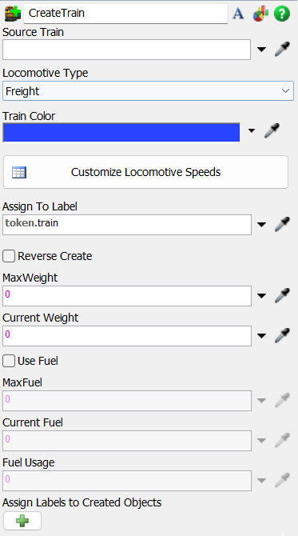
The following properties are on the Create Train panel:
Source Train: Sets the Source that the Train
will be created.
Locomotive Type: Sets the Locomotive Type
created.
Train Color: Sets the train color.
Customize Locomotive Speeds: Pops up the speed table
allowing customized acceleration, deceleration, uncoupled and coupled max speeds values
for loaded and unloaded scenarios.
Assign To Label: Sets the label in token to
save the train.
Reverse Create: Sets if the train will be
created reversed.
Max Weight: Sets the max weight that the train
will be able to carry.
Current Weight: Sets the initial weight for the
train.
Max Fuel: Sets the max fuel that the train will
have.
Current Fuel: Sets the initial fuel for the
train.
Fuel Usage: Sets the fuel usage per unit.
Assign labels to Created Objects: Assign labels to Locomotive
during creation.
Destroy Train
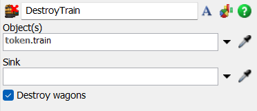
The following properties are on the Destroy Train panel:
Object(s): Sets the objects to be destroyed.
Sink: Sets the Sink that will be used.
Destroy Wagons: Sets if the destruction of the
train will destroy the wagons coupled to it.
Move Train
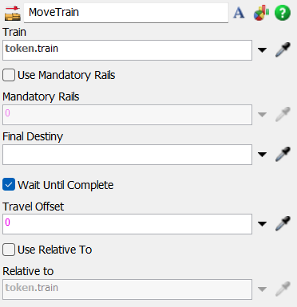
The following properties are on the Move Train panel:
Train: Sets the reference to the train to be
moved.
Mandatory Rails: Sets rails that must be passed
during the travel.
Final Destiny: Sets the final destination to
the train. It can be a Rail, RailControlPoint, Station or Wagon.
Wait Until Complete: Sets if the moving can be
preempted.
Travel Offset: Sets the offset to be used when
moving the train.
Relative to: Sets the train relative compartment to position when parking.
Move Wagon
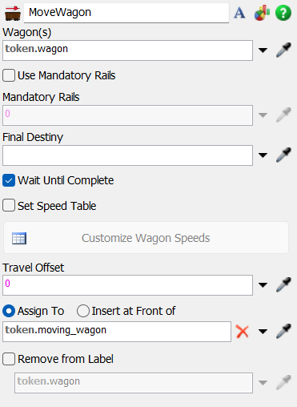
The following properties are on the Move Wagon panel:
Wagon(s): Sets the reference to the wagon(s) to be
moved.
Mandatory Rails: Sets rails that must be passed
during the travel.
Final Destiny: Sets the final destination to
the wagon(s). It can be a Rail, RailControlPoint (movement activities), Station or Locomotive/Wagon (couple and decouple activities).
Wait Until Complete: Sets if the moving can be
preempted.
Set Speed Table: Check to configure a new speed table.
Customize Wagon Speeds: Sets the wagon(s) speed profile.
Travel Offset: Sets the offset to be used when
moving the train.
Assign To/Insert at front of: Sets where the Wagon(s)
will be stored in the token.
Remove from Label: Check to remove the moving wagon(s)
from the previous wagon reference.
Create Wagon
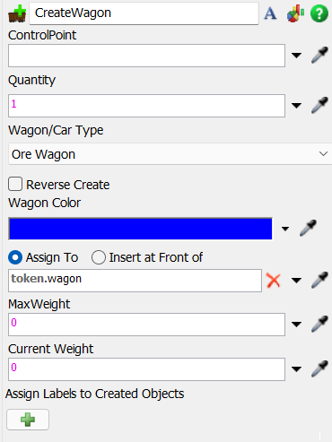
The following properties are on the Create Wagon panel:
ControlPoint: Sets the reference to the
ControlPoint that will hold the wagon.
Quantity: Sets the quantity to be created.
Wagon/Car Type: Sets the type of Wagon that
will be created.
Reverse Create: Sets if the creation of the
wagons will be reversed.
Wagon Color: Sets the Wagon color.
Assign To/Insert at front of: Sets where the Wagon(s) will be
stored in the token.
Max Weight: Sets the max weight for the
Wagon(s).
Current Weight: Sets the initial weight for the
Wagon(s).
Assign labels to Created Objects: Assign labels to Wagon(s)
during creation.
Couple Train
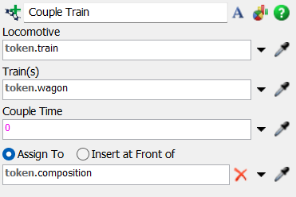
The following properties are on the Couple Train panel:
Locomotive: Sets the reference to the
Locomotive that will hold the Wagon(s).
Train(s): Sets the reference to the
Wagon(s) or Locomotive.
Couple Time: Sets the couple time.
Assign To/Insert at front of: Sets where the composition
will be stored in the token.
Decouple Train
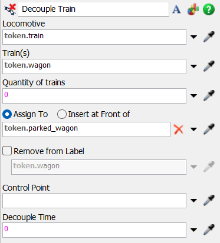
The following properties are on the Decouple Train panel:
Locomotive: Sets the reference to the
Locomotive that holds the Wagon(s)/Locomotive(s).
Train(s): Sets the reference to the Wagon(s)/Locomotive(s).
Quantity of Trains: Set the number of
compartments that will be uncoupled. The 0 by default decouples all compartments.
Assign To/Insert at front of: Sets where the compartments
will be stored in the token.
Remove from Label: Check to remove the compartments
from the previous train reference.
ControlPoint: Sets the ControlPoint that will
receive the compartments.
Decouple Time: Sets the decouple time.
Load Train
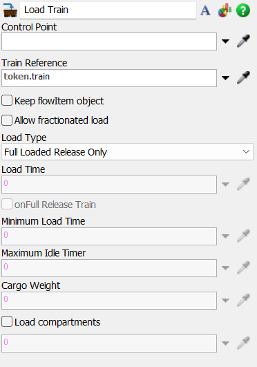
The following properties are on the Load Train panel:
Control Point: Sets the ControlPoint that have
the load/unload operation.
Train Reference: Sets the reference to the
Locomotive that holds the Wagon(s) that will be loaded/unloaded.
Keep Flowitem Object: Switches between keeping
the Flowitem or not in the action of loading. If this is
unchecked, the Flowitem will be destroyed and, in the Wagon,
will only exist as a numeric reference.
Allow Fractionated Load: Switches between
allowing fractionated load or not. If checked, the Wagon can
load fractionated parts of the Flowitem, always filling up the
max weight.
Load Type: Sets the type of load used by this
Activity, which can be: Full Loaded Release Only, Load Time
Constraint, Max Idle Timer and Specific Cargo Weight.
Load Time: Sets the time to load the Locomotive. This value is only used when the Load Type is set to Load Time Constraint or Max Idle Timer.
onFull Release Train: Sets if, when the Locomotive is full, the train will be released early or not.
Mininum Load Time: Sets the minimum load time to load the Locomotive. This value is only used when the Load Type is set to Load Time Constraint or Max Idle Timer, and the onFull Release Train is set to true.
Maximum Idle Time: Sets the max idle time to load the Locomotive. This value is only used when the Load Type is set to Max Idle Timer.
Cargo Weight: Sets the max weight to be loaded. This value is only used when the Load Type is set to Specific Cargo Weight.
Load compartments: Check to specify what compartments will be loaded.
Unload Train
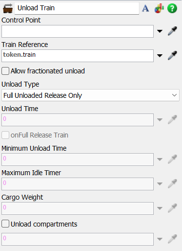
The following properties are on the Unload Train panel:
Control Point: Sets the ControlPoint that have
the load/unload operation.
Train Reference: Sets the reference to the
Locomotive that holds the Wagon(s) that will be loaded/unloaded.
Allow Fractionated unload: Switches between
allowing fractionated unload or not. If checked, the compartment can
unload fractionated parts of the Flowitem, always filling up the
max weight.
Unload Type: Sets the type of unload used by this
Activity, which can be: Full Unloaded Release Only, Unload Time
Constraint, Max Idle Timer and Specific Cargo Weight.
Unload Time: Sets the time to unload the compartments. This value is only used when the Unload Type is set to Unload Time Constraint or Max Idle Timer.
onFull Release Train: Sets if, when the compartments are empty, the train will be released early or not.
Mininum Unload Time: Sets the minimum unload time to unload the compartments. This value is only used when the Unload Type is set to Unload Time Constraint or Max Idle Timer, and the onFull Release Train is set to true.
Maximum Idle Time: Sets the max idle time to unload the Locomotive. This value is only used when the Unload Type is set to Max Idle Timer.
Cargo Weight: Sets the max weight to be unloaded. This value is only used when the Unload Type is set to Specific Cargo Weight.
Unload compartments: Check to specify what compartments will be unloaded.
Fuel Train
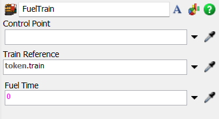
The following properties are on the Fuel Train panel:
Control Point: Sets the ControlPoint that have
the fuel operation.
Train Reference: Sets the reference to the
Locomotive that will be fueled.
Fuel Time: Sets the time to fuel the
Locomotive.
Crane Load
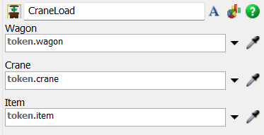
The following properties are on the Crane Load panel:
Wagon: Sets the reference to the Wagon.
Crane: Sets the reference to Crane.
Item: Sets the reference to the item that will
be loaded by the Crane.
Crane Unload
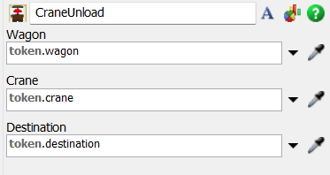
The following properties are on the Crane Unload panel:
Wagon: Sets the reference to the Wagon.
Crane: Sets the reference to Crane.
Destination: Sets the reference to the
destination of unloading.
Send to Portal
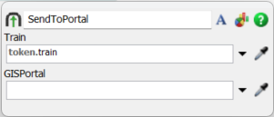
The following properties are on the Send To Portal panel:
Train: Sets the reference to the leading locomotive of a composition.
GISPortal: Sets the reference to the destiny GIS Portal where the composition will be sent to.
After sending the train composition to the GIS Portal, the default SendToPort configuration will determine wich GISPortal will be destiny.
Assign HeadwayTag

The following properties are on the Assign HeadwayTag panel:
Train Reference: Sets the reference to the leading locomotive of a composition.
Headway Tag: Sets the tag to which the headway system will look for.
Train Tag Value: Sets the name for the train which will be shown on the headway outputs.
Get Compartments
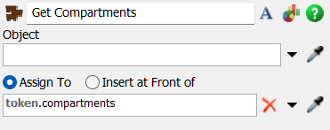
The following properties are on the Get Compartments panel:
Object: Sets the object to get parked locomotives
and wagons when the object is Rail or RailControlPoint; or
gets composition when the object is Locomotive or Wagon.
Assign To/Insert at front of: Sets where the compartment(s)
will be stored in the token.